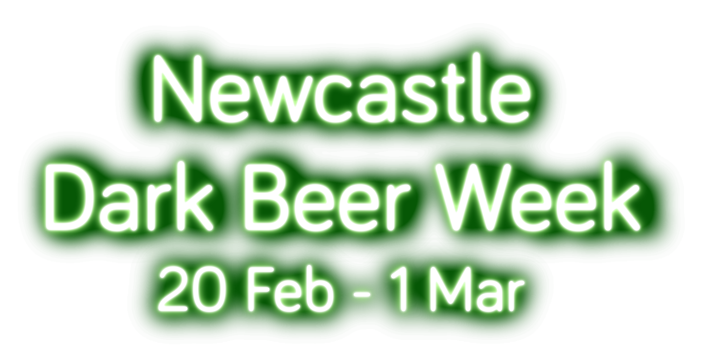
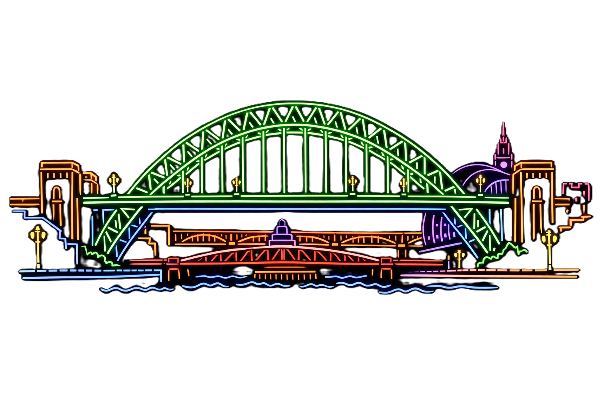

See what the dark side has to offer with a
selection of dark beer styles available at pubs
throughout Newcastle.
Brought to you by
Participating Venues
- Beer Street
- Forth Street, NE1 3NZ
- Bodega
- Wesgate Road, NE1 4AG
- Crown Posada
- Side, Quayside, NE1 3JE
- Crows Nest
- Percy Street, NE1 7RY
- The Five Swans
- St Mary's Place, NE1 7PG
- The Free Trade Inn
- St Lawrence Road, Ouseburn, NE6 1AP
- The High Main
- Shields Road, Byker, NE6 1DL
- Lady Greys
- Shakespeare Street, NE1 6AQ
- Mean Eyed Cat
- St Thomas' Stret, NE1 4LE
- The Town Mouse
- St Mary's Place NE1 7PG
- Trent House
- Leazes Lane, NE1 4QT
- Wobbly Duck
- Old Eldon Square, NE1 7JG

© 2026 CAMRA Tyneside and Northumberland